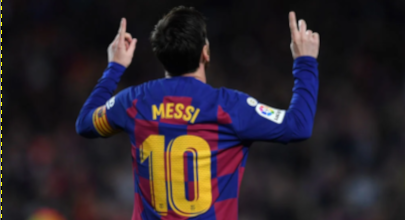
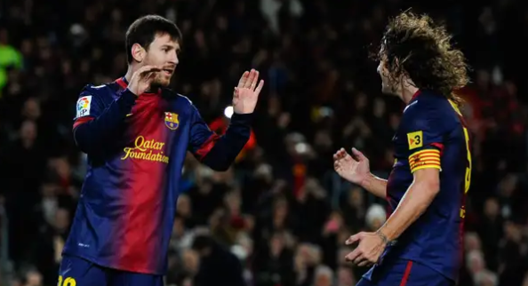
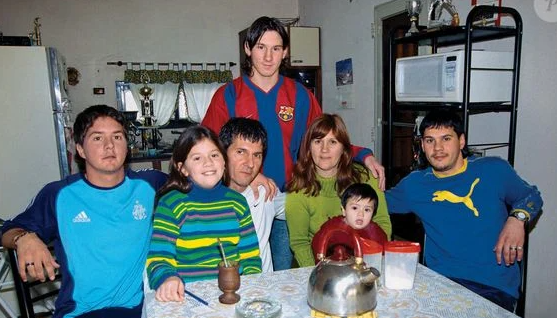

Lionel Messi construiu uma carreira brilhante passando por poucos, porém históricos clubes. Ele iniciou e se consagrou no Barcelona, onde viveu seu auge e conquistou inúmeros títulos. Em 2021, transferiu-se para o PSG, onde atuou por duas temporadas. Depois, seguiu para o Inter Miami, levando ainda mais visibilidade ao futebol nos Estados Unidos. Além dos clubes, Messi sempre foi peça fundamental da Seleção Argentina, com a qual conquistou a Copa América, a Finalíssima e a tão sonhada Copa do Mundo, consolidando seu legado como um dos maiores jogadores da história.
Lionel Messi possui a maior coleção de títulos da história do futebol. Coletivamente, conquistou múltiplas Champions League, Campeonatos Espanhóis e Copas do Rei pelo Barcelona, além de títulos nacionais pelo PSG. Pela Seleção Argentina, venceu a Copa América, a Finalíssima e a Copa do Mundo, coroando sua trajetória no cenário internacional. Individualmente, Messi é o maior vencedor da Bola de Ouro, detentor de diversas Chuteiras de Ouro e recordista de prêmios de melhor do mundo. Ele também é o único jogador de futebol a vencer o Laureus World Sports Award, conhecido como o “Oscar do Esporte”, consolidando-se como o maior vencedor e um dos maiores atletas da história do esporte.
Lionel Andrés Messi nasceu em 24 de junho de 1987, na cidade de Rosário, na Argentina. Desde muito cedo, demonstrou um talento extraordinário para o futebol, jogando nas categorias de base do Newell’s Old Boys. Ainda criança, foi diagnosticado com deficiência hormonal de crescimento, o que quase interrompeu seu sonho. Aos 13 anos, mudou-se para a Espanha após o Barcelona oferecer tratamento médico e a oportunidade de desenvolver seu talento no clube. No time catalão, Messi evoluiu rapidamente, estreou no profissional e tornou-se o maior ídolo da história do clube, quebrando recordes e conquistando inúmeros títulos. Após deixar o Barcelona, atuou pelo Paris Saint-Germain e, posteriormente, pelo Inter Miami. Pela Seleção Argentina, superou críticas, tornou-se capitão e conquistou a Copa América, a Finalíssima e a Copa do Mundo, consolidando-se como um dos maiores jogadores da história do futebol.
